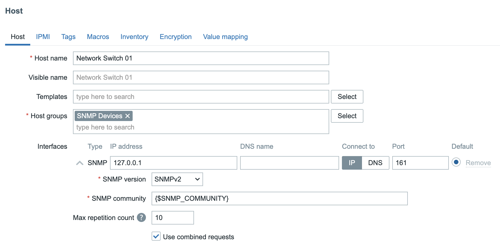
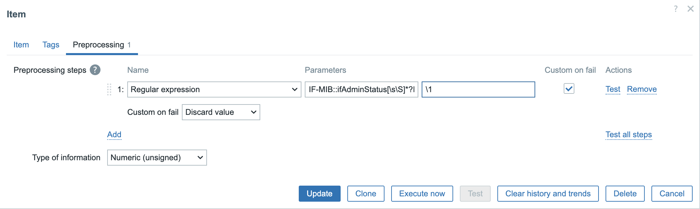
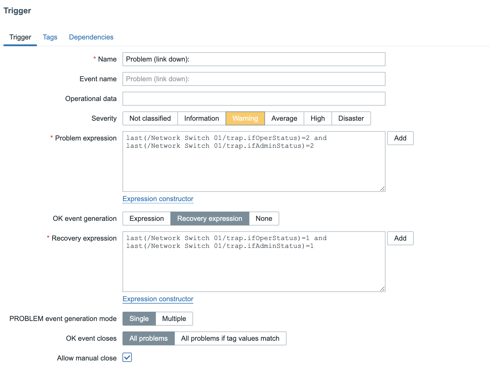
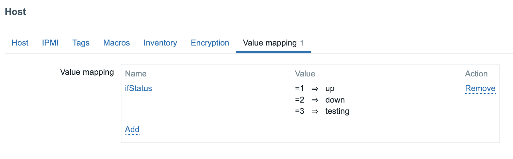

SNMP Trapping
SNMP traps are one of the most powerful features in Zabbix network monitoring. Unlike traditional SNMP polling, which periodically queries devices for status updates, SNMP traps deliver real-time alerts directly from network equipment the moment an event occurs, no waiting for the next polling cycle.
In this chapter, you'll learn how to set up SNMP trap handling in Zabbix, from installing and configuring snmptrapd to integrating it with the Zabbix server. You'll also discover how to analyse, filter, and map incoming traps using regular expressions, and how to link them with triggers and notifications for instant visibility into network issues.
Whether you're monitoring switches, routers, UPS systems, or firewalls, mastering SNMP traps in Zabbix gives you faster event detection, reduced network load, and deeper operational insight.
Traps versus Polling
In Zabbix, SNMP (Simple Network Management Protocol) is one of the most common methods for monitoring network devices such as switches, routers, firewalls, and UPS systems. There are two main ways Zabbix can receive information from an SNMP-enabled device:
- Polling (active monitoring) See previous topic SNMP Polling.
- Traps (passive monitoring)
To understand the differences between trapping and polling and understand the advantages and disadvantages lets have a quick overview:
Polling
With SNMP polling, the Zabbix server or proxy periodically queries the device for specific values using SNMP GET requests. For example, CPU load, interface status, temperature ... The device responds with the current data, and Zabbix stores it in the database.
Polling is a client initiated and scheduled process. It is predictable, reliable, and suitable for continuous metrics that change over time.
Advantages:
- Easy to control frequency and timing.
- Works even if the device doesn't support traps.
- Historical trend data is consistent.
Disadvantages:
- Generates more network traffic on large infrastructures.
- Delays between polls mean slower event detection.
- If a device goes down, Zabbix won't notice until the next polling cycle. (This
can be detected by using the
nodatafunction or using "SNMP agent availability" item but not for individual items unless every items has thenodatafunction and this is also a bad idea.)
Trapping
SNMP traps work the opposite way. The device itself sends a message (trap) to the Zabbix system when an event occurs. For example, a power failure, link down, or temperature alarm. Zabbix listens for incoming traps via the snmptrapd daemon and processes them through its SNMP trap item type.
Traps are event driven and asynchronous, meaning they are sent immediately when something happens. No waiting or polling required.
Advantages:
- Instant notification of important events.
- Reduces network load (no regular queries).
- Ideal for devices that push alerts rather than respond to queries.
Disadvantages:
- Requires external configuration (snmptrapd, scripts, log parsing).
- Not all devices send traps for all events.
- If traps are missed or misconfigured, data is lost. (Traps use UDP)
| Method | Direction | Timing | Example | Pros | Cons |
|---|---|---|---|---|---|
| Polling (Sync) | Zabbix → Device | Periodic | SNMP GET for CPU load | Predictable, simple | Slower, more traffic |
| Polling (Async) | Zabbix → Device | Parallel | Many SNMP GETs at once | Fast, scalable | More complex tuning |
| Traps | Device → Zabbix | Event-driven | Interface down trap | Instant alerts, low load | Requires trap daemon, can miss events |
SNMP flows in Zabbix
---
config:
flowchart:
subGraphTitleMargin:
bottom: 30
---
flowchart TB
%% --- Traps section (top) ---
subgraph TRAPS[SNMP Traps
Active Monitoring]
direction LR
DEV2[Network
Device]
TRAPD[snmptrapd
Daemon]
HANDLER[SNMPTT
or perl script]
ZBXT[Zabbix Server
or Proxy]
DBT[Zabbix
Database]
UI2[Zabbix
Frontend]
USER2[User]
DEV2 -->|SNMP Trap UDP 162| TRAPD
TRAPD -->|Handler Script| HANDLER
HANDLER -->|Trap Log| ZBXT
ZBXT --> DBT
DBT --> UI2
UI2 -->|Displays event| USER2
end
%% --- Invisible connector to force vertical stacking ---
TRAPS ~~~ POLLING
%% --- Polling section (bottom) ---
subgraph POLLING[SNMP Polling
Passive Monitoring]
direction LR
ZBX[Zabbix Server
or Proxy]
POLLER[SNMP Poller
Process]
DEV[Network Device]
ZBX --> POLLER
POLLER -->|SNMP GET UDP 161| DEV
DEV -->|SNMP Response| POLLER
POLLER --> DBP[Zabbix Database]
DBP --> UI1[Zabbix Frontend]
UI1 -->|Displays polled data| USER1[User]
end
%% --- Styling ---
style POLLING fill:#f0fff0,stroke:#3a3,stroke-width:1px
style TRAPS fill:#f0f8ff,stroke:#339,stroke-width:1px
style ZBX fill:#e0ffe0,stroke:#3a3
style DEV fill:#ffefd5,stroke:#c96
style DEV2 fill:#ffefd5,stroke:#c96
style TRAPD fill:#f9f9f9,stroke:#777
style HANDLER fill:#f0f8ff,stroke:#339
style ZBXT fill:#e0ffe0,stroke:#3a3
style DBP fill:#fffbe0,stroke:#996
style DBT fill:#fffbe0,stroke:#996
style UI1 fill:#e8e8ff,stroke:#669
style UI2 fill:#e8e8ff,stroke:#669
style USER1 fill:#fff0f0,stroke:#c33
style USER2 fill:#fff0f0,stroke:#c33
4.33 SNMP Traps vs Polling Flow
SNMP Trap Flow (Active Monitoring)
In an SNMP Trap setup, communication is device initiated. Meaning the network device sends an event message to Zabbix the moment something happens. This is called active monitoring because Zabbix does not need to query the device periodically.
Step-by-step flow:
-
Network Device:
When an event occurs (for example, a power failure, interface down, or temperature alarm), the device immediately sends an SNMP Trap to the configured destination on UDP port 162.
-
snmptrapd Daemon:
The Net-SNMP daemon snmptrapd listens for incoming traps. It acts as a relay between the device and Zabbix, executing a handler script whenever a trap is received.
-
Trap Handler / Log File:
The handler script (often zabbix_trap_receiver.pl or SNMPTT) processes the trap and writes it into a log file, usually "/var/log/snmptrap/snmptrap.log." This file contains the raw trap data including timestamps, source IPs, and OIDs.
-
Zabbix Server or Proxy:
The Zabbix component (server or proxy) monitors the trap log for new entries and matches them against configured SNMP trap items. These items use regular expressions or string filters to extract relevant data.
-
Zabbix Database:
Once processed, the trap information is stored in the database like any other item value.
-
Zabbix Frontend:
The event becomes visible in the Zabbix frontend almost instantly showing up in Latest Data, Problems, or triggering actions and notifications based on your configuration.
Tip
SNMP traps deliver real-time alerts without polling overhead, making them ideal for event driven devices like UPSs, firewalls, or network switches.
SNMP Polling Flow (Passive Monitoring)
In contrast, SNMP Polling is Zabbix initiated. This is called passive monitoring because the Zabbix server (or proxy) queries the device at a set interval to retrieve values.
Step-by-step flow:
-
Zabbix Server or Proxy:
Periodically sends an SNMP GET request to the device using UDP port 161. Each SNMP item in Zabbix corresponds to a specific OID (Object Identifier) that defines which metric is requested (e.g., CPU usage, interface status).
-
Network Device:
Responds to the SNMP GET request with the current value of the requested OID.
-
Zabbix Database:
The response data is stored in the database with a timestamp for trend analysis and historical graphing.
-
Zabbix Frontend:
Displays the collected values in graphs, dashboards, and triggers thresholds if defined.
Tip
SNMP polling provides consistent, periodic data collection. Ideal for metrics like bandwidth usage, temperature, or CPU load. However, it may have a small delay between data updates depending on the polling interval (e.g., every 30s, 1min, etc.).
Summary
| Feature | SNMP Traps (Active) | SNMP Polling (Passive) |
|---|---|---|
| Initiator | Network Device | Zabbix |
| Direction | Device → Zabbix | Zabbix → Device |
| Transport Port | UDP 162 | UDP 161 |
| Frequency | Event-driven (immediate) | Periodic (configurable interval) |
| Resource Usage | Lower (only on events) | Higher (regular queries) |
| Data Type | Event notifications | Continuous metrics |
| Best for | Fault and alert notifications | Performance and trend monitoring |
Tip
In production Zabbix environments, many administrators combine both methods: - Use SNMP polling for regular metrics (e.g., interface traffic, system uptime). - Use SNMP traps for immediate events (e.g., link down, power failure). This hybrid approach gives you both real-time alerts and historical performance data, achieving complete SNMP visibility with minimal overhead.
Setting up SNMP traps with zabbix_trap_receiver
SNMP traps allow network devices to actively send event information to the Zabbix server, enabling near real-time alerting without periodic polling.
In this section, we'll configure Zabbix to receive and process SNMP traps using
the Perl script zabbix_trap_receiver.pl. Do note that this is just one of the
available methods to receive SNMP traps in Zabbix, but it is the most commonly used
and is supported by the Zabbix team.
Install Required SNMP Packages
First of all we need to be able to accept incoming SNMP trap connections on our Zabbix server. This is done by installing the snmptrapd daemon, which is part of the Net-SNMP suite. We also need the Perl bindings for SNMP to run the trap receiver script that will process incoming traps and write them to a log file that Zabbix can read.
Install needed packages
Red Hat
Suse
Ubuntu
This installs the SNMP tools, daemon, and Perl modules used by Zabbix's receiver script.
Refer to previous topic SNMP Polling: Deploying Bare Minimum MIB Files on how to install MIB files if you want to have human readable trap messages in the log file. This is optional but highly recommended for easier troubleshooting and better visibility of trap contents.
Open the Firewall for incoming SNMP Trap Traffic
By default, SNMP traps are received on port 162, most commonly using UDP, but can also use TCP. Make sure this port is open on your Zabbix server:
Open firewall port 162/udp
Red Hat / Suse
Ubuntu
This allows incoming traps from SNMP-enabled devices to be received by the snmptrapd daemon.
Setting up SNMP traps with zabbix_trap_receiver.pl
Next, we need to set up the trap receiver script that will process incoming traps and write them to a log file that Zabbix can read. This script is provided by the Zabbix team and is commonly used to integrate SNMP traps with Zabbix.
Tip
Alternatively, you can use a custom script or SNMPTT (SNMP Trap Translator) if you prefer. We will give an example of creating a bash script later on, but for now let's use the official Zabbix Perl script.
Download the latest zabbix_trap_receiver.pl script from the official
Zabbix GIT repository: https://git.zabbix.com/projects/ZBX/repos/zabbix/browse/misc/snmptrap)
Download zabbix_trap_receiver.pl
Once downloaded, move the script to /usr/bin and make it executable:
Install zabbix_trap_receiver.pl
sudo mv zabbix_trap_receiver.pl /usr/local/bin/
sudo chmod +x /usr/local/bin/zabbix_trap_receiver.pl
If you have SELinux enabled, you will need to set the correct context for the script:
This script will receive traps from snmptrapd and write them to a log file that Zabbix
can read. By default, the script writes to /tmp/zabbix_traps.tmp, but we will
configure it to write to a different location in the next step.
Configure the perl script
Edit the trap receiver script:
Set the desired log file path in the script by searching for the line that
defines $SNMPTrapperFile and updating it to:
Of course, for the script to be able to write to this file, the directory must exist and have the appropriate permissions.
Create log directory for traps
Create the directory:
On ubuntu only :Configure snmptrapd
So now that we have the trap receiver script installed and configured, we need to tell
snmptrapd to use it to process incoming traps. This is done by editing the
/etc/snmp/snmptrapd.conf file and adding the appropriate configuration to execute
the script for each incoming trap.
Configure snmptrapd
Edit the SNMP trap daemon configuration file:
Add following lines:
Explanation:
- `authCommunity execute public` allows traps from devices using the community
string public.
- The `perl do` line executes the Zabbix Perl handler for each incoming trap.
Alternative: Setting up SNMP traps with bash parser
Using perl parser script might feel the only way to do trap parsing but that
is not true. A bash script for example will use less dependencies and can be shortcut
to get a working setup faster.
Bash script to accept the trap
Create a file /usr/local/bin/zabbix_trap_receiver.sh with content:
#!/bin/bash
# Outcome will be produced into a file
OUT=/var/log/zabbix_traps_archive/zabbix_traps.log
# Put contents of SNMP trap from stdin into a variable
ALL=$(tee)
# Extract IP where trap is coming from
HOST=$(echo "$ALL" | grep "^UDP" | grep -Eo "[0-9]+\.[0-9]+\.[0-9]+\.[0-9]+" | head -1)
# Append SNMP trap into the log file
echo "ZBXTRAP $HOST
$(date)
$ALL" | tee --append "$OUT"
The most important part is for the message to hold the keyword ZBXTRAP
followed by the IP address.
Tip
The bash HOST variable can be redefined to extract an IP address
from the actual trap message, therefore giving an opportunity to
automatically forward and store messages in the appropriate host in Zabbix.
Configure snmptrapd to use bash parser
To enable the bash trap parser, inside /etc/snmp/snmptrapd.conf, instead
of using:
use:
Configure Zabbix Server
Now we need to make sure that the Zabbix server is configured to read from this log file:
Enable SNMP Trap Support in Zabbix
Edit the Zabbix server configuration file:
Uncomment or add the following parameters:
Explanation:
- `StartSNMPTrapper=1` enables the Zabbix SNMP trapper process.
- The `SNMPTrapperFile` path must match exactly the path used inside
`zabbix_trap_receiver.pl`.
Restart the Zabbix server to apply changes:
SELinux
If SELinux is enabled on your system, you may need to create a custom policy to
allow the Zabbix Server to read the trap log file.
You can create a policy module using the audit2allow tool based on the denied
actions logged in the audit logs.
First check for any denied actions related to the Zabbix server and the trap log file:
Check for SELinux denials
localhost:~$ sudo ausearch -c 'zabbix_server' -ts recent
time->Sun Mar 8 23:04:40 2026
type=AVC msg=audit(1773007480.439:3417): avc: denied { read } for pid=5278 comm="zabbix_server" name="zabbix_traps.log" dev="vda3" ino=21234 scontext=system_u:system_r:zabbix_t:s0 tcontext=system_u:object_r:snmpd_log_t:s0 tclass=file permissive=0
If you see any denied actions related to reading the trap log file like in the example above, you can create a custom policy module:
Create SELinux policy module for Zabbix SNMP trap log access
Create a custom policy based on the denials:
Enable and Start snmptrapd
Finally, activate and start the SNMP trap daemon so it launches at boot:
This service will now listen on UDP 162 and feed incoming traps to Zabbix.
Important
Any changes in the /etc/snmp/snmptrapd.conf file or the trap receiver script
will require a restart of the snmptrapd service to take effect as snmptrapd
reads its configuration and the script only at startup. It will execute the
script from memory for each incoming trap to avoid the overhead of reading
the script from disk again for every trap.
(Optional) Rotate the Trap Log File
Zabbix writes all traps into a temporary log file. To prevent this file from growing indefinitely, you can configure log rotation using logrotate. The logrotate utility will automatically rotate, compress, and manage old logfiles and is installed by default on most Linux distributions. If not, you can install it using your package manager, but we will assume it's already installed.
Configure log rotation for trap log
Create a new logrotate configuration file /etc/logrotate.d/zabbix_traps:
Add the following content to this file.
Explanation:
- This configuration rotates the trap log `weekly` or when it exceeds
`size 10M` except `notifempty` and it will not fail on `missingok`.
- Old logs are `compress`ed and stored in the same `olddir`ectory with a
`dateext`ension in `dateformat -%Y%m%d`.
- It keeps up to `rotate 10` rotated logs and deletes logs older than
`maxage 365` days.
Test log-rotation manually
You can manually test the log rotation to ensure it's working correctly:
Testing and debugging
Testing SNMP Trap Reception
First we open the log file to monitor incoming traps in real-time:
Next, we can simulate a trap manually using the snmptrap command in a separate
terminal.
Send test SNMP traps
Example 1: SNMP v1 Test Trap
sudo snmptrap -v 1 -c public 127.0.0.1 '.1.3.6.1.6.3.1.1.5.4' '0.0.0.0' 6 33 '55' .1.3.6.1.6.3.1.1.5.4 s "eth0"
Example 2: SNMP v2c Test Trap
When you now verify the terminal with the log file, you should see the trap message with the source IP and timestamp displayed.
While using "zabbix_trap_receiver.pl" as a parser, the perl dependencies will be validated only at the runtime when receiving the actual message. It can be handy to see if the status of service is still healthy. Running the "status" for the systemd service automatically prints the most recent log lines of snmptrapd.
For troubleshooting efficiency:
-
Wrong order is: restart service, run status, send trap
-
Correct order is: restart service, send trap, run status
Testing SNMP Trap reception without UPD channel
This method helps to simulate a SNMP trap message even if the device currently cannot send one.
Simulate SNMP trap message
The most important part is having keyword "ZBXTRAP" (all caps) followed by the IP address. The IP must belong to an existing SNMP interface behind Zabbix proxy/server.
Validate if proxy/server runs a correct mapping
If the host is not yet configured in frontend, that is a perfect opportunity to validate
if the Zabbix proxy/server service has recognised the mapping with a zabbix_traps.log file.
Every time a trap message is received for an unknown host in Zabbix it will print a line about "unmatched trap received from" in the log file.
Send a test trap
Immediately after sending the trap, check the Zabbix proxy/server log for any unmatched trap messages:
Check for unmatched trap messages in Zabbix logs
Zabbix Proxy:
If the line appears, it's a solid indication the settings StartSNMPTrapper
and SNMPTrapperFile are configured correctly.
SELinux considerations
If SELinux is enabled and traps are not being processed, check for denied actions:
Check for SELinux denials related to Zabbix trap reception
Specific for the zabbix process:
replacezabbix_server with zabbix_proxy if you are using a proxy.
more generally for any AVC denials:
Adjust SELinux policies or create exceptions for /usr/local/bin/zabbix_trap_receiver.pl
and the trap log directory as needed.
(Optional) SNMPv3 Trap Configuration
If using SNMPv3 for secure traps, you can define users directly in /etc/snmp/snmptrapd.conf:
Configure SNMPv3 trap user
This adds authentication and encryption for trap communication.
Desperate snmptrapd.conf for SNMPv2
If community names for SNMPv2 traps are not known and deadlines are approaching, we can allow every SNMP trap message to come in by ignoring all community strings.
Add at the beginning of the existing /etc/snmp/snmptrapd.conf file:
For example with a bash parser it's enough to have only 2 active lines to make it functional and have confidence that trap receiving is working.
Minimal snmptrapd.conf for SNMPv2 traps
This is only applicable to SNMPv2 traps. This will not work with SNMPv3 traps.
Security risk
This configuration allows any SNMP trap message to be accepted regardless of the community string, which can pose a significant security risk. It is recommended to use this setting only temporarily for testing purposes and to revert to a more secure configuration as soon as possible.
Trap mapping and preprocessing
With SNMP traps now configured and the trap receiver operational, the next step is to create a host in the Zabbix frontend so that we can link incoming traps to a specific monitored device.
In the Zabbix web interface, navigate to: Data collection → Hosts, and click Create host.
- Hostname :
Network Switch 01 - Host groups : SNMP Devices
- Interfaces : SNMP with IP
127.0.0.1

In Zabbix, the macro {$SNMP_COMMUNITY} is often defined globally under Administration
→ Macros. This global macro provides a default SNMP community string used by all
hosts that rely on SNMP for polling or trap-based communication.
However, a better approach, especially in larger or more secure environments is to define a unique SNMP community per device and override the global macro at host level. This allows for more granular access control and simplifies troubleshooting when multiple community strings are used across the network.
Sending a Test Trap
With the host and trap receiver configured, we can now simulate a link down event from our device by sending an SNMP trap manually from the command line:
On the command line we can now sent a trap to mimic a Link down on our device.
This command sends a version 2c SNMP trap using the community string public to
the local Zabbix trap receiver, emulating a linkDown event defined by
OID 1.3.6.1.6.3.1.1.5.3.
Verifying Trap Reception
After sending the test trap, open the Zabbix frontend and navigate to: Monitoring → Latest data
Select the host Network Switch 01.
If everything is configured correctly, you should now see data populated in your
SNMP trap item, confirming that Zabbix successfully received and processed the
trap.
Example of received SNMP trap in latest data
2025-10-13T21:10:58+0200 PDU INFO:
errorindex 0
notificationtype TRAP
messageid 0
transactionid 2
receivedfrom UDP: [127.0.0.1]:50483->[127.0.0.1]:162
community public
requestid 57240481
version 1
errorstatus 0
VARBINDS:
DISMAN-EVENT-MIB::sysUpTimeInstance type=67 value=Timeticks: (227697) 0:37:56.97
SNMPv2-MIB::snmpTrapOID.0 type=6 value=OID: IF-MIB::linkDown
Sending a More Realistic Trap Example
In a real production environment, SNMP traps usually include additional variable bindings (varbinds) that describe the state of the affected interface or component. To better simulate a real-world scenario, we can extend our previous test command to include this extra information.
Run the following command on the Zabbix server:
Send a more detailed SNMP trap
This will give use the following output:
Example of a more detailed SNMP trap in latest data
2025-10-13T21:53:15+0200 PDU INFO:
errorstatus 0
version 1
requestid 139495039
community public
transactionid 14
receivedfrom UDP: [127.0.0.1]:35753->[127.0.0.1]:162
messageid 0
notificationtype TRAP
errorindex 0
VARBINDS:
DISMAN-EVENT-MIB::sysUpTimeInstance type=67 value=Timeticks: (481390) 1:20:13.90
SNMPv2-MIB::snmpTrapOID.0 type=6 value=OID: IF-MIB::linkDown
IF-MIB::ifIndex type=2 value=INTEGER: 1
IF-MIB::ifAdminStatus type=2 value=INTEGER: 1
IF-MIB::ifOperStatus type=2 value=INTEGER: 1
IF-MIB::ifName type=4 value=STRING: "Gi0/1"
IF-MIB::ifDescr type=4 value=STRING: "GigabitEthernet0/1"
Creating SNMP Trap Items
Now that our host is configured and we've verified that traps are being received, we can create a set of items to store and process the trap data in a structured way.
We’ll start with a catch-all (fallback) item that captures every SNMP trap received for this host. Then we'll add two dependent items to extract specific values such as the administrative and operational interface status.
Creating the SNMP Fallback Item
This item serves as the master collector for all incoming traps. Any dependent items you create later will use this as their source.
In the Zabbix frontend, navigate to Data collection → Hosts → Network Switch 01 → Items and click Create item.
Configure the following parameters:
- Name:
SNMP Trap: Fallback - Type: SNMP trap
- Key:
snmptrap.fallback - Type of information: Text
Next we will create 2 dependent items. One item for the ifAdminStatus and another
one for the ifOperStatus. You can do this by clicking on the 3 dots before our
fallback item or by just creating a new item and selecting type Dependent item
- Name:
Trap ifAdminStatus - Type: Dependent item
- Key:
trap.ifAdminStatus - Type of information: Numeric(unsigned)
- Master item: (Select your fallback item as master item)
Click on the Preprocessing tab and select Regular expression.
use IF-MIB::ifAdminStatus[\s\S]*?INTEGER:\s+(\d+) in the Parameters field and
\1 in the Output box.
Select the box Custom on fail and use the option Discard value.

Next we create our second item also dependent on our Fallback item.
- Name:
Trap ifOperStatus - Type: Dependent item
- Key:
trap.ifOperStatus - Type of information: Numeric(unsigned)
- Master item: (Select your fallback item as master item)
Again go to the Preprocessing tab and enter following information.
Select Regular expression and as Parameters enter IF-MIB::ifOperStatus[\s\S]*?INTEGER:\s+(\d+)
and \1 in the Output box.
Again add a Custom on fail step and select Discard value.
We have our items now but we still are missing our trigger. Go back to your host and click on the triggers and add the following trigger.
- Name:
Problem (Link down:) - Severity: Warning
- Problem expression:
last(/Network Switch 01/trap.ifOperStatus)=2 and last(/Network Switch 01/trap.ifAdminStatus)=2 - Recovery expression:
last(/Network Switch 01/trap.ifOperStatus)=1 and last(/Network Switch 01/trap.ifAdminStatus)=1

Make sure to also select the box Allow manual close. This can help to close the problem in case we don't receive a TRAP.
You should now be able to sent a trap to open and close a problem in Zabbix based on the status of the ifOperStatus and the ifAdminStatus
Send test SNMP traps to trigger the problem
snmptrap -v 2c -c public 127.0.0.1 '' IF-MIB::linkDown IF-MIB::ifIndex i 1 IF-MIB::ifAdminStatus i 2 IF-MIB::ifOperStatus i 2 IF-MIB::ifName s "Gi0/1" IF-MIB::ifDescr s "GigabitEthernet0/1"
snmptrap -v 2c -c public 127.0.0.1 '' IF-MIB::linkDown IF-MIB::ifIndex i 1 IF-MIB::ifAdminStatus i 1 IF-MIB::ifOperStatus i 1 IF-MIB::ifName s "Gi0/1" IF-MIB::ifDescr s "GigabitEthernet0/1"
As a bonus you can add on the host a value map and link the items with it.

If you don't like 2 different items and want to have a more fancy solution you could create a dependent item like we did above and use JS instead of perl regex.
Using JS to extract multiple values from the trap message
var s = value;
function grab(re) {
var m = s.match(re);
return m ? m[1] : '';
}
// Extract fields from your sample payload
var ifName = grab(/IF-MIB::ifName[\s\S]*?STRING:\s+"([^"]+)"/m);
var admin = grab(/IF-MIB::ifAdminStatus[\s\S]*?INTEGER:\s+(\d+)/m);
var oper = grab(/IF-MIB::ifOperStatus[\s\S]*?INTEGER:\s+(\d+)/m);
// Map 1/2/3 -> up/down/testing
var map = { '1':'up', '2':'down', '3':'testing' };
var a = map[admin] || admin || '?';
var o = map[oper] || oper || '?';
var name = ifName || 'ifName=?';
return 'interface=' + name + ' adminStatus=' + a + ' operStatus=' + o;
This will return output in latest data like
Another solution, way more easy, could be to create a specific item instead of falling back on the fallback item that looks exactly for a link that goes Down or Up. This can be done by creating a specific item like this:
- Item Key:
snmptrap["IF-MIB::link(Down|Up)"]
We could then create a trigger like:
- Problem expression:
str(/Network Switch 01/snmptrap["IF-MIB::link(Down|Up)"],"IF-MIB::linkDown")=1
and a recovery trigger like :
- Recovery expression:
str(/Network Switch 01/snmptrap["IF-MIB::link(Down|Up)"],"IF-MIB::linkUp")=1
As you can see, the possibilities are endless and SNMP traps are not so easy and probably need some tweaking before you have it all working like you want.
Note
The snmptrap.fallback is a good point to start with if you have no clue what
traps to expect. It can help you to discover all the traps and make sure
you catch all traps even if they are not configured on your host.
Conclusion
We started by setting up the trap reception environment using snmptrapd and the
zabbix_trap_receiver.pl script, then integrated it into Zabbix through the SNMP
Trapper process.
You also learned how to open the necessary firewall ports, configure log rotation
for the trap file, and verify successful reception using test traps.
In the Zabbix frontend, we created a host representing our SNMP device, added
a catch-all trap item, and built dependent items to extract key values such as
ifAdminStatus and ifOperStatus.
From there, we constructed a simple yet effective trigger pair that raises an alert
when a linkDown trap is received and automatically resolves it when a linkUp trap
arrives.
Combine traps with SNMP polling to balance real-time alerts with long-term performance metrics.
SNMP traps are one of the most powerful mechanisms in Zabbix for achieving proactive monitoring. When properly configured, they provide immediate visibility into the health and state of your infrastructure, allowing you to respond to issues the moment they happen, not minutes later.
Questions
- What is the key difference between SNMP polling and SNMP traps in how they collect data?
- Why are SNMP traps often described as active monitoring while SNMP polling is passive?
- What is the purpose of the zabbix_trap_receiver.pl script, and where is it defined in the SNMP configuration?
- What role does the parameter StartSNMPTrapper play in zabbix_server.conf?
- In what kind of situations would you prefer SNMP traps over polling?
- How could you use SNMP traps in combination with SNMP polling for a hybrid monitoring strategy?
Useful URLs
- https://www.zabbix.com/documentation/current/en/manual/config/items/itemtypes/snmptrap
- https://git.zabbix.com/projects/ZBX/repos/zabbix/browse/misc/snmptrap
- https://www.net-snmp.org/
- https://datatracker.ietf.org/doc/html/rfc3416
- https://datatracker.ietf.org/doc/html/rfc1905
- https://datatracker.ietf.org/doc/html/rfc1157